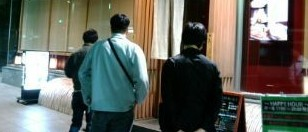

ＧＷを利用して、韓国麻雀連盟の幹部２人が来日。といっても韓国に日本と同じようなＧＷがあるわけではない。５／１（金）はメーデーなので、会社を休み易い。５／２、５／３は土日なので、もともと休み。５／５（火）は端午の節句（祭）。そこで５／４（月）をなんとかすれば、５日間の連休となる。
二人のうち １人は韓国麻雀連盟の理事長のローエンさん、もう１人はアクティブメンバーのリアルさん（いずれもＨＮ）。ローエンさんは５／１、一足先に関空へ到着、リアルさんは１日遅れて５／２ 関空へ到着。５／２（土）は二人でＵＳＪへ遊びに行く予定だったが、その時間が無くなってしまった。そこでせっかくなので日本のフリー雀荘を体験しようと、たまたま目にしたフリー雀荘にとびこんだ。
たぶん点３か点５くらいと思い、数時間は遊ぶつもりで入店したが レートがなんとピンの１-３。おまけに、たとえ２位でも沈みだとナントカ カントカ（要するにハコを喰らうと、約１万円コースだったらしい）。
日本のフリー雀荘を体験しようと思っただけで、そんなレートで打つ気はまったくなかった。しかし説明を聞いただけでサヨウナラというわけにも......さいわいにも最初のゲームは１人がトップで、もう１人が３位で終了。そこで
その１ゲームで早々に引き上げたとか。（^-^；
翌日（5/3）は名古屋へ移動。名古屋駅では午前10時頃にσ(-_-) and 純麻雀の会員ＮＣさんと待ち合わせの予定。しかしＧＷのせいで、電車の切符が全部
売り切れ。結局 到着は昼になってしまった。
それでもなんとか無事落ち合えた。もう昼だというので、４人で麻雀談義をしながらの昼食。その後 午後８時頃まで あとから駆けつけたもう１人の純麻会員とともに一般的な日本麻雀や純麻雀をプレー。
その後 伏見のホテルにチェックインしたあと、午後11時頃まで近くの居酒屋で酒を酌み交わしながら麻雀談義。いや、非常に楽しい一日だった。翌日（5/4）は名古屋駅から大阪に戻り、帰国された。
居酒屋へ入店する寸前のスナップ（中央がローエンさん、右側がリアルさん）

|